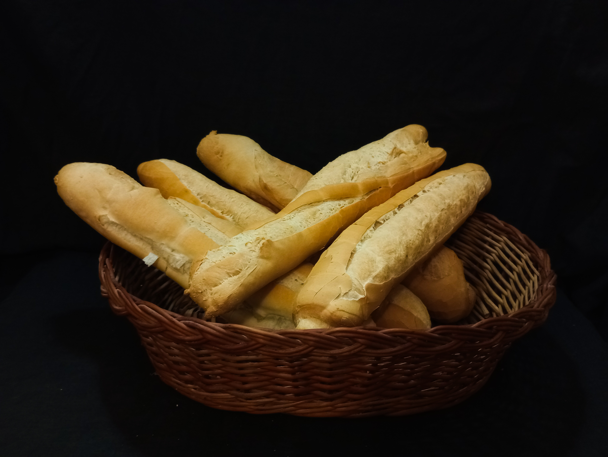

PAN FRANCÉS

El pan francés, el más clásico de todos, consta de una preparacion típica con harina 000,
levadura, sal entrefina, grasa de vaca, y un ditivo alimentario mejorador de harina.
Éste último lo que hace es reaccionar con el calor, garantizando una textura esponjosa agradable
a la vista, al tacto y por supuesto al sabor, de esta manera logramos una experiencia
completamente unica que nos distingue y problablemente sea una de las razones por la que nos
elegis.
FACTURAS

Nuestras famosas facturas las hacemos con harina 000, sal entrefina, margarina, huevo, leche en
polvo, azucar, escencia de vainilla,
escencia de manteca y escencia de limon para lograr un aroma único. Primero se mezcla la
margarina, el azucar, huevo y esencias
despues agregar harina hasta lograr una mezcla maleable. Una vez lista se le pasa un poco de
margarina, se
espolvorea harina y levadura ,se amasa hasta que la masa quede lisa, estirar hasta un cm de
grosor y le damos forma manualmente
PAN DE CHICHARRÓN

La preparacion de la masa es la misma que la del pan francés. Una vez hecha la masa se estira y
se agrega un poco de grasa vacuna, se agrega chicharron de cerdo (elaborado
artesanalmente en nuestras instalaciones), más levadura y se amasa hasta que esté
todo bien integrado, luego se estira y se corta del tamaño que querramos darle y lo enrrollamos.